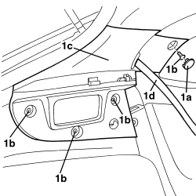
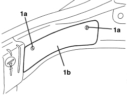
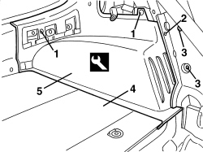
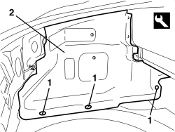
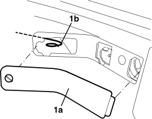

7040B18 LOAD COMPARTMENT LOAD PLATFORM SIDE TRIM ONE LH OR RH - R.R
- Path
- Procedures > 70 FITTINGS > 7040 BODY INTERIOR FITTINGS AND TRIM > 7040B LUGGAGE COMPARTMENT AND LOAD PLATFORM TRIMS > 7040B18 LOAD COMPARTMENT LOAD PLATFORM SIDE TRIM ONE LH OR RH - R.R
- Kind
- repair procedure (removal / refitting; the operation number is the code)
- Applies to
- all engines; all production periods
- Interactive page
- https://sloeber94.github.io/elrnDB-aBrrSpdr/en/#/946002621
Applies to: all engines; all production periods
 Removing
Removing
 Refitting
RefittingOp. 7040B22 LUGGAGE COMPARTMENT/LOAD PLATFORM MOULDING - R+R
- Lower the rear seat backrest.
- For the left trim.
Op. 7040G30 BOOT LIGHT BULB HOLDER - R.R.
1. Working on the rear pillar cover, release the bolt cover (1a).
Undo the bolts (1b).
Move and lower the rear pillar cover (1c) without releasing it from the seat belt (1d).

Applies to: all engines; all production periods
1. Rotate the retainers (1a) and remove the cover (1b).

Applies to: all engines; all production periods
1. Release the retaining buttons using the special tool.
Tool | Description | Function | Validity |
|---|---|---|---|
1823015000 | Knife | Retainer removal |
2. Undo the bolt.
3. Loosen the panel fixing bolts.
4. Move the floor covering.
5. Remove the side trim.

Applies to: all engines; all production periods
Refitting
Removing- Check that the side trim is not damaged.
- Fit the side trim in place.
- Position the floor covering.
- Tighten the panel fixing bolts.
- Tighten the bolt.
- Attach the retaining buttons.
- Position the cover and secure it using the retainers.
- Place the rear pillar trim in position.
- Tighten the bolts.
- Fit the bolt covers.
Op. 7040G30 BOOT LIGHT BULB HOLDER - R.R.
- Lower the rear seat backrest.
Op. 7040B22 LUGGAGE COMPARTMENT/LOAD PLATFORM MOULDING - R+R
Applies to: engines: 2.2 JTS, 3.2 JTS; all production periods; only with equipment: Spider
Removing
RefittingOp. 7040B20 BACK TRIM FOR LUGGAGE COMPARTMENT/LOAD PLATFORM - ARRANGE
Op. 7040B10 LOAD PLATFORM (LUGGAGE PLATFORM) TRIM - R+R
Op. 7040B22 LUGGAGE COMPARTMENT/LOAD PLATFORM MOULDING - R+R
- For the left trim only.
Op. 7040G30 BOOT LIGHT BULB HOLDER - R.R.
1. Release the retaining buttons using the special tool.
Tool | Description | Function | Validity |
|---|---|---|---|
1823015000 | Knife | Retainer removal |
2. Remove the side trim.

Applies to: engines: 2.2 JTS, 3.2 JTS; all production periods; only with equipment: Spider
Refitting
Removing- Check that the side trim is not damaged.
- Position the side trim.
1. (For the right trim only) Remove the cover (1a) and check that the emergency rod (1b) for opening the fuel filler flap is in the correct position.

Applies to: engines: 2.2 JTS, 3.2 JTS; all production periods; only with equipment: Spider
- Attach the retaining buttons.
Op. 7040G30 BOOT LIGHT BULB HOLDER - R.R.
Op. 7040B22 LUGGAGE COMPARTMENT/LOAD PLATFORM MOULDING - R+R
Op. 7040B10 LOAD PLATFORM (LUGGAGE PLATFORM) TRIM - R+R
Op. 7040B20 BACK TRIM FOR LUGGAGE COMPARTMENT/LOAD PLATFORM - ARRANGE
Topics linked from this page (4)
- 7040B10 LOAD PLATFORM (LUGGAGE PLATFORM) TRIM - R+R
- 7040B20 BACK TRIM FOR LUGGAGE COMPARTMENT/LOAD PLATFORM - ARRANGE
- 7040B22 LUGGAGE COMPARTMENT/LOAD PLATFORM MOULDING - R+R
- 7040G30 BOOT LIGHT BULB HOLDER - R.R.
Topics that link to this page (13)
- S026 REAR NOISE (CREAKING/SQUEAKING/TICKING)
- S028 REAR NOISE (KNOCKING)
- 4420AG CHECK ON CORRECT FITTING OF SHOCK ABSORBER BUFFER PLATE
- 4420OB CHECK ON CORRECT TIGHTENINGS FOR REAR SUSPENSION
- 5010C60 LH OR RH REAR AIR OUTLET VENT (ONE) - R.R
- 5570T27 AERIAL SUPPORT - R.R
- 5570T85 CD/AUDIO PLAYER/LOADER - R.R.
- 5580H10 PARKING OBSTACLE DETECTION DEVICE ELECTRONIC CONTROL UNIT - R.R.
- 5580T40 BOSE SOUND SYSTEM SUBWOOFER - R.R.
- 5580T42 BOSE SOUND SYSTEM AMPLIFIER - R.R.
- 7025B34 BOOT LID EMERGENCY OPENING CONTROL - R.R.
- 7065B10 REAR SEAT BELT (ONE), LEFT OR RIGHT - R.R.
- 7095E35 REAR WING SOUND INSULATION PANEL (ONE), LEFT OR RIGHT - R.R.